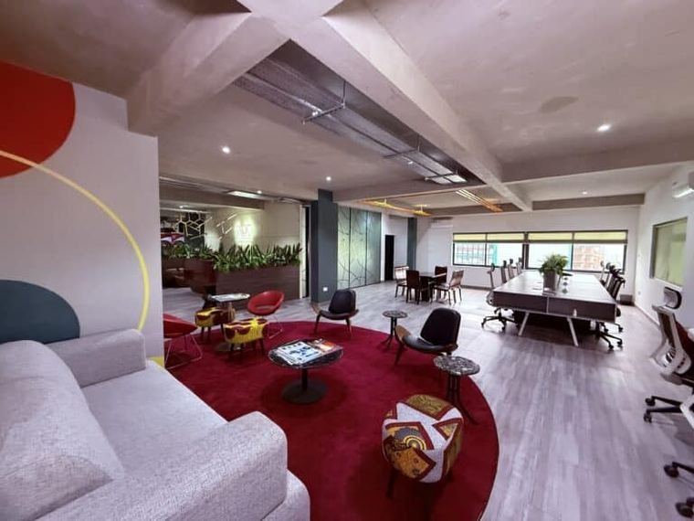

Listen
We start by understanding your organisation, your stakeholders and the environment you operate in, before we recommend anything.
What we do


Influence is built through a clear understanding of the stakeholders, policies and environments shaping an organisation's operating landscape. Our public affairs approach combines stakeholder intelligence, government relations, policy engagement and strategic communications to build credibility and influence where decisions are actually made.

Clients who trust us
Recent results
Measured across print, broadcast, online and social, on live campaigns for our clients.
Who we are
We work with organisations, brands and leaders to shape how they are understood, build meaningful connections with their stakeholders, and navigate the issues that matter most to their reputation and success.
Learn more about usHow we work
We start by understanding your organisation, your stakeholders and the environment you operate in, before we recommend anything.
Clear, candid advice on what to say, to whom and when, even when it isn't the easy answer.
We deliver across media, digital, events and government channels, so the message lands where it counts.
Selected work
Corporate Communications · Agriculture
526M+Featured case study
A decade of operations, a new yoghurt factory and a Dairy Centre of Excellence, connected to national questions of food security.
Through SKOT Impact Academy and SKOT Elevate, we help emerging talent, professionals, entrepreneurs and organisations build the practical skills, strategic insight and confidence they need to communicate, lead and grow with impact.
Blog & insights





Get in touch